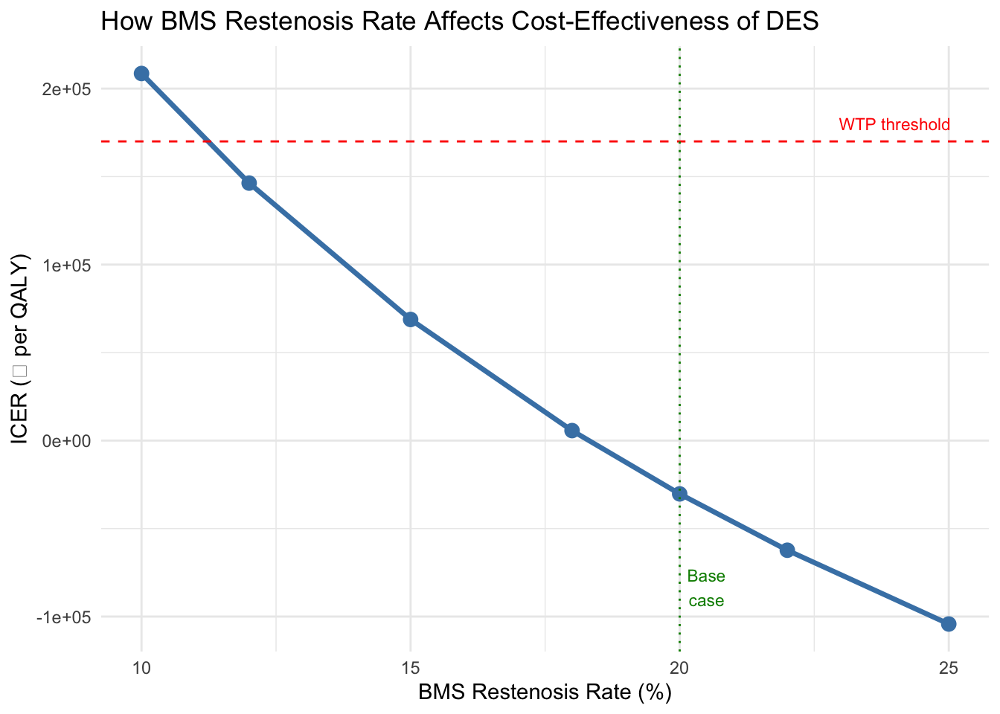
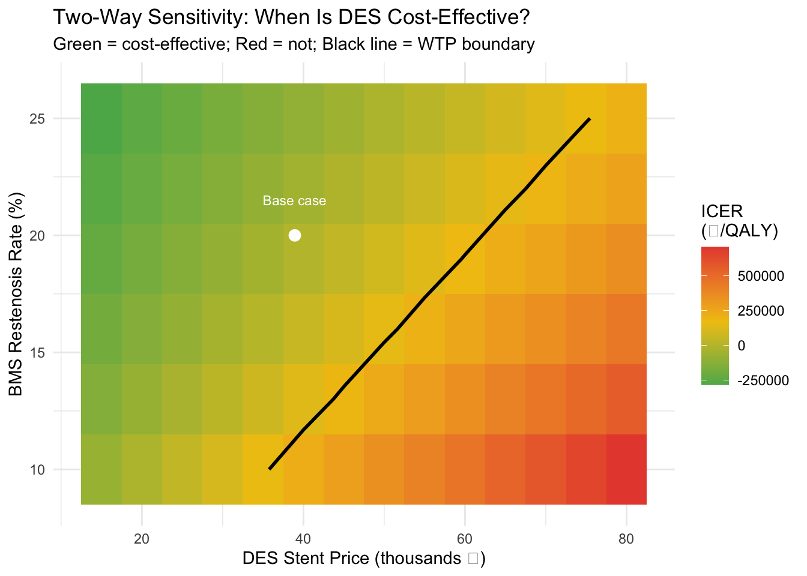

Warning: package 'ggplot2' was built under R version 4.5.2Solution: DES vs BMS Exercises
Completed answers with interpretation
Task 1 Solution: Verify R Against Excel
Code
base <- run_model()
kable(data.frame(
Metric = c("Total cost DES (cohort)", "Total cost BMS (cohort)",
"Cost per patient DES", "Cost per patient BMS",
"Total QALYs DES", "Total QALYs BMS",
"Incremental cost", "Incremental QALYs", "ICER"),
R_Result = c(
paste0("₹", format(round(base$cost_des), big.mark = ",")),
paste0("₹", format(round(base$cost_bms), big.mark = ",")),
paste0("₹", format(round(base$cost_des / n_cohort), big.mark = ",")),
paste0("₹", format(round(base$cost_bms / n_cohort), big.mark = ",")),
round(base$qaly_des, 1),
round(base$qaly_bms, 1),
paste0("₹", format(round(base$inc_cost), big.mark = ",")),
round(base$inc_qaly, 2),
paste0("₹", format(round(base$icer), big.mark = ","))
)
), col.names = c("Metric", "R Result"),
caption = "Base case results — compare these with Excel Results sheet",
align = c("l", "r"))| Metric | R Result |
|---|---|
| Total cost DES (cohort) | ₹221,174,862 |
| Total cost BMS (cohort) | ₹224,594,772 |
| Cost per patient DES | ₹221,175 |
| Cost per patient BMS | ₹224,595 |
| Total QALYs DES | 4130.9 |
| Total QALYs BMS | 4018.1 |
| Incremental cost | ₹-3,419,910 |
| Incremental QALYs | 112.86 |
| ICER | ₹-30,302 |
Interpretation: The R and Excel results should match. Both use the same formulas and parameter values. Any small differences would come from intermediate rounding — R keeps full floating-point precision throughout, while Excel may round displayed values. This cross-validation confirms that the R model is not a “black box” — it does exactly what the Excel formulas do, but in a reusable, scriptable form.
Key teaching point
Cross-validation against a spreadsheet is standard practice when building HTA models in code. It builds confidence that the model is correct. Many published HTA guidelines recommend this dual-implementation approach.
Task 2 Solution: Pre-Regulation Stent Prices
Code
result_pre_reg <- run_model(c_des = 120000, c_bms = 45000)
result_current <- run_model()
kable(data.frame(
Era = c("Pre-regulation (2017)", "Current NPPA (2025)"),
DES_Price = c("₹1,20,000", "₹38,933"),
BMS_Price = c("₹45,000", "₹10,693"),
Inc_Cost = c(paste0("₹", format(round(result_pre_reg$inc_cost), big.mark = ",")),
paste0("₹", format(round(result_current$inc_cost), big.mark = ","))),
ICER = c(paste0("₹", format(round(result_pre_reg$icer), big.mark = ",")),
paste0("₹", format(round(result_current$icer), big.mark = ",")))
), col.names = c("Era", "DES Price", "BMS Price", "Inc. Cost (cohort)", "ICER (₹/QALY)"),
caption = "Impact of NPPA price regulation",
align = c("l", "r", "r", "r", "r"))| Era | DES Price | BMS Price | Inc. Cost (cohort) | ICER (₹/QALY) |
|---|---|---|---|---|
| Pre-regulation (2017) | ₹1,20,000 | ₹45,000 | ₹42,280,360 | ₹374,626 |
| Current NPPA (2025) | ₹38,933 | ₹10,693 | ₹-3,419,910 | ₹-30,302 |
Interpretation: The NPPA price regulation dramatically changed the economics. Before regulation, the large price gap (₹75,000 per stent) meant a much higher incremental cost, pushing the ICER up. After regulation, the gap shrunk to ₹28,240, and at current prices DES is likely dominant — cheaper overall because downstream savings from prevented restenosis and MACE events exceed the stent premium. This shows how pricing policy directly shapes HTA conclusions: same clinical evidence, completely different economic answer. It also illustrates why HTA should not be a one-time exercise — when market conditions change, cost-effectiveness should be re-evaluated.
Task 3 Solution: Varying Restenosis Rates
Code
result_a <- run_model(p_rest_des = 0.03, p_rest_bms = 0.20)
result_b <- run_model(p_rest_des = 0.08, p_rest_bms = 0.10)
result_c <- run_model(p_rest_des = 0.05, p_rest_bms = 0.12)
kable(data.frame(
Scenario = c("A: DES 3% vs BMS 20% (large gap)",
"B: DES 8% vs BMS 10% (narrow gap)",
"C: DES 5% vs BMS 12% (both improve)"),
Gap = c("17 pp", "2 pp", "7 pp"),
Restenosis_Avoided = c(
round(result_a$restenosis_bms - result_a$restenosis_des),
round(result_b$restenosis_bms - result_b$restenosis_des),
round(result_c$restenosis_bms - result_c$restenosis_des)
),
ICER = c(paste0("₹", format(round(result_a$icer), big.mark = ",")),
paste0("₹", format(round(result_b$icer), big.mark = ",")),
paste0("₹", format(round(result_c$icer), big.mark = ",")))
), col.names = c("Scenario", "Rate Gap", "Restenosis Avoided", "ICER (₹/QALY)"),
caption = "Cost-effectiveness driven by the restenosis rate gap",
align = c("l", "c", "r", "r"))| Scenario | Rate Gap | Restenosis Avoided | ICER (₹/QALY) |
|---|---|---|---|
| A: DES 3% vs BMS 20% (large gap) | 17 pp | 163 | ₹-103,179 |
| B: DES 8% vs BMS 10% (narrow gap) | 2 pp | 18 | ₹208,577 |
| C: DES 5% vs BMS 12% (both improve) | 7 pp | 67 | ₹69,490 |
Interpretation: It is the difference in restenosis rates — not the absolute level — that drives cost-effectiveness. When the gap is large (Scenario A), DES prevents many more restenosis events, generating substantial savings that offset the higher stent cost. When the gap narrows (Scenario B), the incremental benefit shrinks while the price premium remains, making DES less attractive.
This has real clinical implications: for patient subgroups where BMS performs relatively well (simple lesions in large vessels), the case for DES weakens. For high-risk patients (diabetics, long lesions, small vessels), DES becomes strongly cost-effective because the restenosis gap is wider.
Scenario C shows that if both technologies improve, the conclusion depends on whether the gap widens or narrows — it is the relative advantage, not the absolute performance, that matters for cost-effectiveness.
Task 4 Solution: One-Way Sensitivity — R vs Excel
Code
bms_rates <- c(0.10, 0.12, 0.15, 0.18, 0.20, 0.22, 0.25)
results <- sapply(bms_rates, function(r) run_model(p_rest_bms = r)$icer)
fmt_icer <- function(x) {
ifelse(x < 0,
paste0("₹", format(round(x), big.mark = ","), " (DOMINANT)"),
paste0("₹", format(round(x), big.mark = ",")))
}
kable(data.frame(
BMS_Restenosis = paste0(bms_rates * 100, "%"),
ICER = sapply(results, fmt_icer),
CE = ifelse(results < 170000, "Yes", "No")
), col.names = c("BMS Restenosis Rate", "ICER (₹/QALY)", "Cost-effective?"),
caption = "One-way sensitivity: BMS restenosis rate vs ICER",
align = c("c", "r", "c"))| BMS Restenosis Rate | ICER (₹/QALY) | Cost-effective? |
|---|---|---|
| 10% | ₹208,577 | No |
| 12% | ₹146,310 | Yes |
| 15% | ₹68,808 | Yes |
| 18% | ₹5,668 | Yes |
| 20% | ₹-30,302 (DOMINANT) | Yes |
| 22% | ₹-62,317 (DOMINANT) | Yes |
| 25% | ₹-104,241 (DOMINANT) | Yes |
Code
ggplot(data.frame(Rate = bms_rates * 100, ICER = results),
aes(x = Rate, y = ICER)) +
geom_line(colour = "steelblue", linewidth = 1.2) +
geom_point(colour = "steelblue", size = 3) +
geom_hline(yintercept = 170000, linetype = "dashed", colour = "red") +
geom_vline(xintercept = 20, linetype = "dotted", colour = "green4") +
annotate("text", x = 24, y = 180000, label = "WTP threshold", colour = "red", size = 3) +
annotate("text", x = 20.5, y = min(results) * 0.8, label = "Base\ncase", colour = "green4", size = 3) +
labs(x = "BMS Restenosis Rate (%)", y = "ICER (₹ per QALY)",
title = "How BMS Restenosis Rate Affects Cost-Effectiveness of DES") +
theme_minimal()
Interpretation: As BMS restenosis rate drops (better BMS), the advantage of DES shrinks and the ICER rises. At the base case (20%), DES is dominant. At very low BMS rates, the ICER crosses the WTP threshold and DES may no longer be cost-effective.
The process lesson
This table took 2 lines of R code (the sapply and data.frame). In Excel, the same exercise required switching between 3 sheets, 7 times each — approximately 21 manual steps with opportunities for copy-paste errors. And this was only one parameter across 7 values. Sensitivity analysis in practice involves dozens of parameters across hundreds of values. This is why we use R.
Task 5 Solution: Two-Way Sensitivity
Code
des_prices <- seq(15000, 80000, by = 5000)
bms_rest_rates <- seq(0.10, 0.25, by = 0.03)
grid <- expand.grid(DES_Price = des_prices, BMS_Restenosis = bms_rest_rates)
grid$ICER <- mapply(function(p, r) run_model(c_des = p, p_rest_bms = r)$icer,
grid$DES_Price, grid$BMS_Restenosis)
ggplot(grid, aes(x = DES_Price / 1000, y = BMS_Restenosis * 100, fill = ICER)) +
geom_tile() +
scale_fill_gradient2(low = "#27ae60", mid = "#f1c40f", high = "#e74c3c",
midpoint = 170000, name = "ICER\n(₹/QALY)") +
geom_contour(aes(z = ICER), breaks = 170000, colour = "black", linewidth = 1) +
annotate("point", x = 38.933, y = 20, colour = "white", size = 3) +
annotate("text", x = 38.933, y = 21.5, label = "Base case", colour = "white", size = 3) +
labs(x = "DES Stent Price (thousands ₹)",
y = "BMS Restenosis Rate (%)",
title = "Two-Way Sensitivity: When Is DES Cost-Effective?",
subtitle = "Green = cost-effective; Red = not; Black line = WTP boundary") +
theme_minimal()Warning: The following aesthetics were dropped during statistical transformation: fill.
ℹ This can happen when ggplot fails to infer the correct grouping structure in
the data.
ℹ Did you forget to specify a `group` aesthetic or to convert a numerical
variable into a factor?
Interpretation: The heatmap shows the joint impact of two key uncertainties. The base case (white dot) sits comfortably in the green zone — DES is cost-effective at current NPPA prices with current restenosis estimates. The black contour line shows the boundary: combinations above and to the right are cost-effective; below and to the left are not.
Key observations: even if the DES price doubles to ~₹80K, DES remains cost-effective as long as BMS restenosis stays above ~18%. Conversely, if BMS restenosis drops to 10% (very good BMS), DES would need to be priced below ~₹25K to remain cost-effective.
This heatmap evaluated 84 parameter combinations in 6 lines of code. In Excel, this would require a manually constructed two-input data table — possible, but cumbersome, error-prone, and difficult to modify. This is the kind of analysis that makes R indispensable for HTA.
Summary: What These Exercises Taught Us
| Lesson | Evidence |
|---|---|
| R and Excel give the same answers | Task 1: cross-validation |
| Pricing policy changes HTA conclusions | Task 2: pre- vs post-NPPA |
| The restenosis gap drives cost-effectiveness, not absolute rates | Task 3: three scenarios |
| R is dramatically faster for sensitivity analysis | Task 4: 2 lines vs 21 clicks |
| R scales to complex analyses that Excel cannot | Task 5: 78-cell heatmap |
→ Next sessions: We will use run_model() to build formal DSA (tornado diagrams) and PSA (Monte Carlo simulation with CEACs).